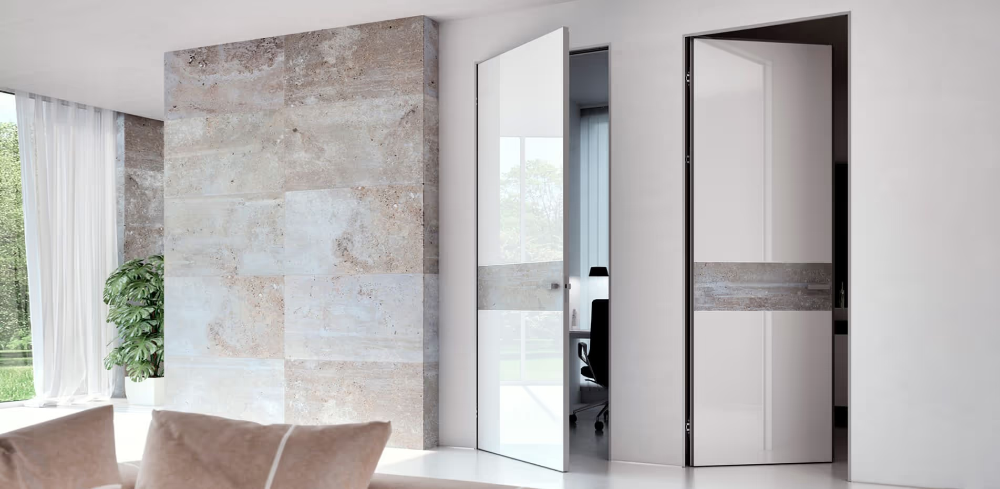

ДВЕРЯГИН · Ростов-на-Дону · ТаганрогДвери.
Двери.
Для вашего интерьера.
Межкомнатные двери, перегородки, стеновые панели и фурнитура. Подберём сочетание отделки и интерьерных решений в салонах Ростова-на-Дону и Таганрога.
Выбрать двери
ПРИМЕРЫ РЕШЕНИЙВажен интерьер.
Важен интерьер.
Важны детали.
Сравните отделку дверей и фурнитуру, посмотрите сочетания с интерьером. Выберите близкий вариант и обратитесь за консультацией по моделям и размерам.
Получить консультацию